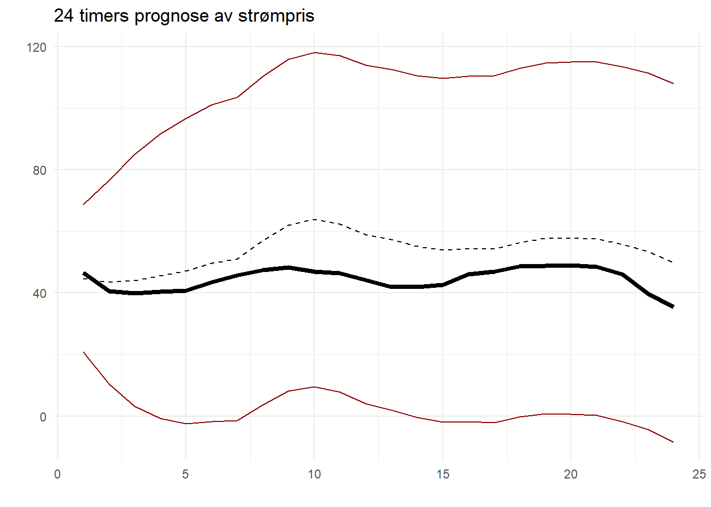

7.4 Dataøving 4
En produsent som vil selge kraft til Nord Pool leverer salgsbud til kraftbørsen som spesifiserer, for hver time neste dag, hvor mange megawatt (MW) man er villig til å produsere til ulike priser. Fristen for å levere salgsbud er kl 12:00 dagen før produksjonen skal finne sted. For en vindkraftprodusent er det flere usikre faktorer man må ta stilling til når man skal levere salgsbud for neste dag:
- Timeprisene i spotmarkedet (Euro/MW) er ukjente (blir ikke offentliggjort før kl 12:45).
- For å vite hvor mange megawatt (MW) man kan produsere i en gitt time trenger man å vite vindstyrken. Selv med gode værprognoser vil det fremdeles være betydelig usikkerhet knyttet til vindstyrken i de ulike timene neste dag.
- Dersom den faktiske produksjonen avviker fra det man har meldt inn vil det påløpe en straffekostnad. I timer med mye vind vil man måtte selge den overskytende produksjonen til en lavere pris enn spotprisen, og i timer med lite vind vil man måtte kompensere fleksible produsenter for å dekke opp for den manglende produksjonen. Straffekostnaden (Euro/MW) for over- eller underproduksjon er en ukjent størrelse på budgivningstidspunktet.
I denne dataøvingen skal vi konsentrere oss om å lage prognoser for spotprisen. I case 3 i BED4 kommer dere også til å få bruk for vindstyrken og straffekostnadene, men å lage prognoser for disse vil kreve ferdigheter utover det som gjennomgås i MET4.
Hvis du ikke tar BED4 dette semesteret, så går det helt fint også. Dataøvingen står fint på egne bein, og du kan uansett komme tilbake til disse resultatene hvis du for eksempel skal ta BED4 på et senere tidspunkt.
Du har kanskje lagt merke til at R-kodingen i tidsrekkemodulen har en litt forskjellig stil fra det vi har gjort tidligere i kurset. I denne øvingen vil derfor størsteparten av koden blir oppgitt i oppgaveteksten. Din oppgave blir å kjøre koden, få ut figurer og resultater, samt å kommentere og tolke resultatene.
Vi starter med å laste inn noen pakker som vi kommer til å trenge. Som vanlig må du installere pakkene først dersom du ikke har gjort det allerede:
7.4.1 Oppgave 1: Last inn og se på datasettet
Denne gang er datasettet pakket inn i en såkalt .Rdata-fil. Det er et enkelt filformat for å lagre R-objekter. Last ned p_da.Rdata, og last datasettet inn i R ved å kjøre følgende kommando (der du selvsagt har satt arbeidsmappen til der du har lagt datafilen):
Du skal nå få to tidsrekker i minnet: n03 og no5, som i figuren under:

Disse to tidsrekkene inneholder strømprisen i to prisområder i Norge hver time fra 1. januar 2022 til og med 21. september 2022. Tidsrekken no3 inneholder prisen for Midt-Norge (NO3) og no5 inneholder prisen for Vest-Norge (NO5).
Vi konsentrerer oss om NO3 i første omgang, og kikker raskt på datasettet ved å plotte tidsrekken direkte med autoplot()-funksjonen som vi finner i forecast-pakken:
På \(x\)-aksen har vi antall dager siden 1. januar 2022. Skriv en kort kommentar der du peker på noen viktige karakteristikker ved denne tidsrekken. Du må gjerne bruke xlim-argumentet i plot()-funksjonen for å zoome inn og se på mindre tidsperioder. Ser tidsrekken ut til å være stasjonær?
7.4.2 Oppgave 2: Gjem bort den siste dagen slik at vi kan sjekke prediksjonene våre
For å kunne gjøre en vurdering av hvor gode prediksjonene våre er, deler vi nå datasettet vårt i to, der vi tar ut de siste 24 timene som vi kan bruke til å evaluere prediksjonene. Vi kaller disse to delene no3_train, som er den lange delen som vi skal bruke til å estimere en modell (trene en modell), og no3_test som er de siste 24 timene som vi skal bruke til å teste etterpå om modellen duger.
Vi bruker funksjonen window() til å hente ut deler av tidsrekken, der vi må spesifisere start- og sluttverdier som vektorer med to elementer; en for dag og en for time. Det er 264 dager i datasettet vårt, så da får vi:
no3_train <- window(no3, start = c(1, 0), end = c(263, 23))
no3_test <- window(no3, start = c(264, 0), end = c(264, 23))Du kan nå dobbelsjekke at du har fått ut en enkelt dag i no3_test ved å kjøre autoplot(no3_test).
7.4.3 Oppgave 3: Hent ut sesong og trend
Vi har lært at et første steg i tidsrekkeanalyse er å hente ut eventuelle sesong og trendkomponenter. Vi har også sett at det er en enkel funksjon i R som kan gjøre dette for oss, nemlig stl(), slik vi så i seksjonen om trend og sesong.
Det var ikke så lett å se detaljer i sesongkomponenten i dette plottet, så vi zoomer inn på en mindre del av x-aksen:

Gi en kort beskrivelse av de ulike komponentene i tidsrekken.
7.4.4 Oppgave 4: Prediker treningstidsrekken 24 steg frem og visualiser resultatene.
Vi skal nå slippe veldig billig unna! Denne oppgaven består egentlig av flere steg:
- Finn en statistisk modell for residualtidsrekken. Bruk for eksempel
auto.arima()for å finne den ARIMA-modellen som passer best til treningsdatasettet. - Bruk denne modellen til å predikere residualtidsrekken 24 steg frem.
- Skriv trendserien 24 steg frem. Her må vi ha en fornuftig måte å ekstrapolere som vi ikke har dekket eksplisitt i materialet vårt.
- Hekt på en ny dag med den daglige sesongvariasjonen.
- Legg sammen prediksjonene av residualene, trend- og sesongkomponenten for å lage en prediksjon av prisserien.
Vi kunne godt satt oss ned for å programmere disse stegene hver for seg. Heldigvis har noen gjort dette før oss, gjennom funksjonen forecast() i forecast-pakken. For å lage en prognose må vi sende inn den dekomponerte tidsrekken, sammen med en spesifikasjon av hvilken type statistisk tidsrekkemodell vi ønsker å tilpasse til residualtidsrekken (vi velger ARIMA, for det er den modellen vi har lært om), og hvor mange steg frem vi ønsker å predikere. Vi kan også legge til signifikansnivået for et prediksjonsintervall som vi vil ha på 95%:
Vi kan visualisere resultatet ved hjelp av autoplot(). For å kunne se noe fornuftig i plottet så tar vi bare med de 100 siste observerte tidsstegene i tillegg til de 24 prediksjonene:

Gi en kommentar til dette plottet.
7.4.5 Oppgave 5: Sammenlign prediksjonene med de faktiske observasjonene
Vi kan nå finne frem igjen no3_test, som er en tidsrekke som inneholder de faktiske observasjonene for dagen der vi har gjort prediksjoner. La oss sammenligne. En måte å visualisere dette på er å hente ut prediksjonene fra prognose-objektet (de ligger under $mean), og sette det sammen med de faktiske observasjonene (som vi har lagret i no3_test). Vi kan også hente ut prediksjonsintervallene, og sette alt inn i en data frame:
# Setter prediksjoner, intervaller og observasjoner inn i samme data frame.
prediksjoner <- data.frame(
x = 1:24, # Timer i døgnet for x-aksen
prediksjon = prognose$mean, # Predikerte priser
nedre = prognose$lower[,1], # Nedre og øvre prediksjonsintervaller
ovre = prognose$upper[,1],
observert = no3_test # De faktiske observasjonene
)
# Lager plott
ggplot(prediksjoner) +
geom_line(aes(x = x, y = prediksjon), linetype = "dashed") + # Prediksjoner
geom_line(aes(x = x, y = nedre), colour = "darkred") + # Nedre grense
geom_line(aes(x = x, y = ovre), colour = "darkred") + # Øvre grense
geom_line(aes(x = x, y = observert), size = 1.5) + # Observert
xlab("") + ylab("") +
ggtitle("24 timers prognose av strømpris") +
theme_minimal()## Warning: Using `size` aesthetic for lines was deprecated in ggplot2
## 3.4.0.
## ℹ Please use `linewidth` instead.
## This warning is displayed once every 8 hours.
## Call `lifecycle::last_lifecycle_warnings()` to see where this
## warning was generated.I dette plottet er prediksjonene av strømprisen vist som en stiplet linje, mens de prisene som faktisk ble observert er vist som en tykk heltrukken linje. Kommenter plottet.
7.4.6 Oppgave 6: Lag prediksjoner for neste dag
Så langt har vi brukt alle dagene i datasettet vårt bortsett fra den siste til å predikere strømprisen på den siste dagen. Resultatene ser ut til å være gode. Du kan nå gjenta denne prosedyren, men i stedet for tidsrekken no3_train skal du nå bruke hele tidsrekken no3 til å predikere prisen for dagen etter det – den 22. september 2022 – en dag der vi ikke har de faktisk realiserte prisene i datasettet vårt.
Du skal få et prediksjonsplott som ser slik ut:

Du kan så samle prediksjonene i en data frame som i forrige oppgave, men der vi selvsagt ikke kan ha med en kolonne med observerte priser, siden vi ikke har dem tilgjengelige. Den endelige tabellen med observasjoner skal se slik ut:
## x prediksjon nedre ovre
## 1 1 36.02709 12.1495723 59.90460
## 2 2 36.45012 3.3208432 69.57940
## 3 3 37.28821 -3.5736943 78.15012
## 4 4 38.53910 -7.6663095 84.74451
## 5 5 39.89017 -9.5638644 89.34420
## 6 6 42.27134 -9.0837471 93.62643
## 7 7 43.55218 -8.9521015 96.05647
## 8 8 49.43543 -3.8202856 102.69114
## 9 9 54.36794 0.5712673 108.16460
## 10 10 56.23131 2.0083818 110.45425
## 11 11 54.74981 0.1657312 109.33389
## 12 12 51.32547 -3.5811987 106.23213
## 13 13 49.64904 -5.5564816 104.85456
## 14 14 47.41288 -8.0764075 102.90216
## 15 15 46.22697 -9.5361822 101.99013
## 16 16 46.70673 -9.3236145 102.73708
## 17 17 46.61878 -9.6740934 102.91166
## 18 18 48.72382 -7.8282025 105.27583
## 19 19 50.11119 -6.6974082 106.91979
## 20 20 50.21319 -6.8499490 107.27634
## 21 21 50.04209 -7.2739046 107.35808
## 22 22 48.34032 -9.2270566 105.90769
## 23 23 45.94396 -11.8734681 103.76139
## 24 24 42.20995 -15.8563146 100.27621Kommenter.
7.4.7 Oppgave 7: Lagre prediksjonene i en excel-fil.
Hvis du tar BED4 dette semesteret (eller skal ta BED4 på et senere tidspunkt) så trenger du nå å eksportere disse prediksjonene til en Excel-fil. En pakke som kan gjøre dette er writexl (som du, igjen, er nødt til å installere før bruk: install.packages("writexl")). Hvis du har lagret prediksjonene i en data frame som heter prediksjoner2, så kan du skrive den ut i en Excel-fil på følgende måte:
Du skal nå ha en Excel-fil med prediksjonene dine i filen no3_prediksjoner.xlsx i arbeidsmappen din.
7.4.8 Oppgave 8: Gjør det samme for no5
Du kan nå gjenta øvelsen over for å få ut samme type prediksjoner for det andre prisområdet. Tidsrekken finner du i no5 og prediksjonsplottet ser slik ut:

Data framen med prediksjonene skal se slik ut:
prediksjoner3 <- data.frame(
x = 1:24, # Timer i døgnet for x-aksen
prediksjon = prognose3$mean, # Predikerte priser
nedre = prognose3$lower[,1], # Nedre og øvre prediksjonsintervaller
ovre = prognose3$upper[,1]
)
prediksjoner3## x prediksjon nedre ovre
## 1 1 346.3622 310.5934 382.1310
## 2 2 338.6796 286.6895 390.6698
## 3 3 344.5907 281.3350 407.8464
## 4 4 358.3632 286.3178 430.4086
## 5 5 378.5406 300.1708 456.9105
## 6 6 402.4033 319.0857 485.7209
## 7 7 424.7142 337.5252 511.9031
## 8 8 441.2872 350.5347 532.0397
## 9 9 441.0059 346.6958 535.3159
## 10 10 417.9910 319.6357 516.3462
## 11 11 393.0380 290.0513 496.0247
## 12 12 369.8592 261.5774 478.1409
## 13 13 352.9104 239.0015 466.8192
## 14 14 346.8510 227.3225 466.3794
## 15 15 350.4399 225.7535 475.1262
## 16 16 367.2739 238.1157 496.4321
## 17 17 390.4917 257.6416 523.3417
## 18 18 415.6232 279.7278 551.5187
## 19 19 433.2506 294.7538 571.7474
## 20 20 437.4176 296.4963 578.3390
## 21 21 429.5152 286.1074 572.9229
## 22 22 412.5279 266.3558 558.7000
## 23 23 390.6720 241.3325 540.0115
## 24 24 368.3594 215.4343 521.2845Du lagrer den som en Excel-fil slik:
Du kan laste ned de ferdige Excel-filene her for å kontrollere at du har fått det til: no3_prediksjoner.xlsx og no5_prediksjoner.xlsx.